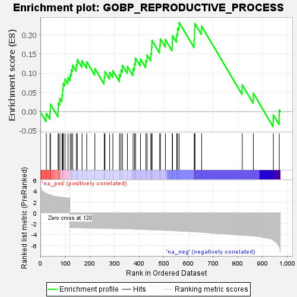
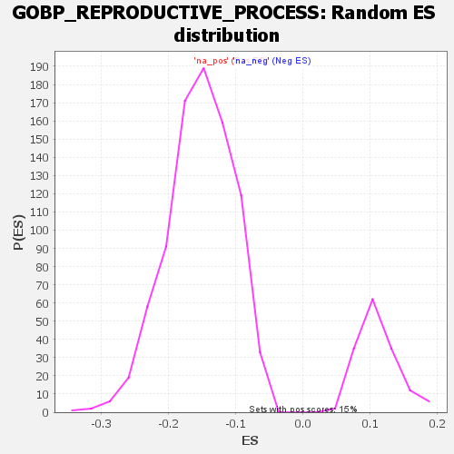

| | | Dataset | genes_ranked_stat_0.1 |
| Phenotype | NoPhenotypeAvailable |
| Upregulated in class | na_pos |
| GeneSet | GOBP_REPRODUCTIVE_PROCESS |
| Enrichment Score (ES) | 0.2322713 |
| Normalized Enrichment Score (NES) | 2.1061487 |
| Nominal p-value | 0.0 |
| FDR q-value | 0.41004345 |
| FWER p-Value | 0.429 |
Table: GSEA Results Summary

Fig 1: Enrichment plot: GOBP_REPRODUCTIVE_PROCESS
Profile of the Running ES Score & Positions of GeneSet Members on the Rank Ordered List
| SYMBOL | RANK IN GENE LIST | RANK METRIC SCORE | RUNNING ES | CORE ENRICHMENT | | 1 | PLG | 24 | 3.612 | -0.0043 | Yes |
| 2 | SEPTIN7 | 39 | 3.332 | 0.0005 | Yes |
| 3 | LZTFL1 | 41 | 3.319 | 0.0194 | Yes |
| 4 | PDGFRA | 72 | 2.971 | 0.0047 | Yes |
| 5 | MAEL | 73 | 2.951 | 0.0224 | Yes |
| 6 | ACE2 | 79 | 2.924 | 0.0345 | Yes |
| 7 | HOXA9 | 88 | 2.867 | 0.0431 | Yes |
| 8 | SELENOP | 91 | 2.854 | 0.0581 | Yes |
| 9 | WNT3 | 93 | 2.848 | 0.0741 | Yes |
| 10 | SLC38A3 | 100 | 2.802 | 0.0844 | Yes |
| 11 | SPATA6 | 112 | 2.753 | 0.0890 | Yes |
| 12 | FUT6 | 121 | -2.726 | 0.0967 | Yes |
| 13 | ST14 | 126 | -2.731 | 0.1088 | Yes |
| 14 | GFRA1 | 131 | -2.734 | 0.1209 | Yes |
| 15 | HOXB13 | 146 | -2.747 | 0.1222 | Yes |
| 16 | NPPC | 150 | -2.757 | 0.1355 | Yes |
| 17 | KRT8 | 169 | -2.778 | 0.1327 | Yes |
| 18 | VDR | 188 | -2.800 | 0.1300 | Yes |
| 19 | ZAR1 | 221 | -2.830 | 0.1123 | Yes |
| 20 | UCN | 259 | -2.870 | 0.0894 | Yes |
| 21 | EDNRA | 262 | -2.873 | 0.1045 | Yes |
| 22 | NOS3 | 281 | -2.889 | 0.1023 | Yes |
| 23 | MEIOC | 294 | -2.900 | 0.1067 | Yes |
| 24 | UNC5C | 321 | -2.930 | 0.0961 | Yes |
| 25 | NICOL1 | 327 | -2.935 | 0.1083 | Yes |
| 26 | ADRA2A | 333 | -2.942 | 0.1206 | Yes |
| 27 | PLCB1 | 353 | -2.965 | 0.1178 | Yes |
| 28 | CEBPB | 376 | -2.996 | 0.1119 | Yes |
| 29 | SLC2A1 | 382 | -3.011 | 0.1246 | Yes |
| 30 | TPGS1 | 386 | -3.017 | 0.1395 | Yes |
| 31 | ZNF296 | 406 | -3.057 | 0.1372 | Yes |
| 32 | DHH | 428 | -3.098 | 0.1331 | Yes |
| 33 | GJB2 | 433 | -3.109 | 0.1474 | Yes |
| 34 | JAG2 | 448 | -3.128 | 0.1510 | Yes |
| 35 | C3 | 451 | -3.132 | 0.1677 | Yes |
| 36 | GAS2 | 453 | -3.135 | 0.1854 | Yes |
| 37 | NR2F2 | 484 | -3.191 | 0.1720 | Yes |
| 38 | EREG | 487 | -3.193 | 0.1891 | Yes |
| 39 | TSSK6 | 507 | -3.229 | 0.1878 | Yes |
| 40 | SCX | 535 | -3.288 | 0.1783 | Yes |
| 41 | FOXL2 | 536 | -3.290 | 0.1981 | Yes |
| 42 | TPPP3 | 553 | -3.328 | 0.2007 | Yes |
| 43 | SPAG4 | 557 | -3.338 | 0.2175 | Yes |
| 44 | ZNF628 | 563 | -3.359 | 0.2323 | Yes |
| 45 | AMH | 624 | -3.506 | 0.1883 | No |
| 46 | PCSK4 | 626 | -3.510 | 0.2083 | No |
| 47 | LIF | 627 | -3.513 | 0.2294 | No |
| 48 | GAL3ST1 | 654 | -3.580 | 0.2227 | No |
| 49 | MSX2 | 819 | -4.155 | 0.0698 | No |
| 50 | UTP14C | 864 | -4.274 | 0.0477 | No |
| 51 | MDK | 945 | -5.097 | -0.0084 | No |
| 52 | TFAP2C | 969 | -6.278 | 0.0043 | No |
Table: GSEA details [plain text format]

Fig 2: GOBP_REPRODUCTIVE_PROCESS: Random ES distribution
Gene set null distribution of ES for GOBP_REPRODUCTIVE_PROCESS